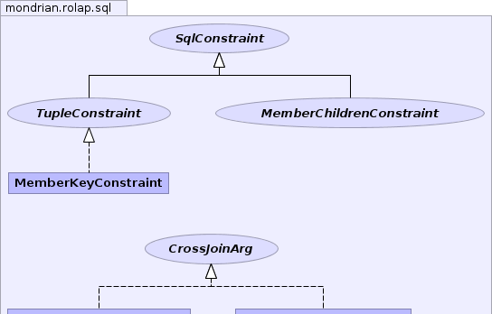
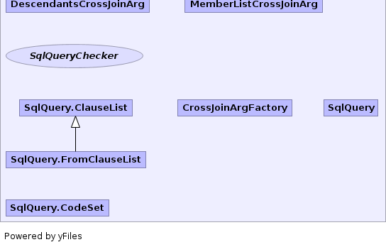

- Overview
- Package
- Class
- Tree
- Deprecated
- Index
- Help
| Interface | Description |
|---|---|
| CrossJoinArg |
"Light version" of a
TupleConstraint,
represents one of
member.children, level.members, member.descendants, {enumeration}. |
| MemberChildrenConstraint |
Restricts the SQL result of a MembersChildren query in SqlMemberSource.
|
| SqlConstraint |
Restricts the members that are fetched by SqlMemberSource.
|
| SqlQueryChecker |
Runs a SQL query.
|
| TupleConstraint |
Restricts the SQL result of
TupleReader. |
| Class | Description |
|---|---|
| CrossJoinArgFactory |
Creates CrossJoinArgs for use in constraining SQL queries.
|
| DescendantsCrossJoinArg |
Represents one of:
Level.Members: member == null and level != null
Member.Children: member != null and level =
member.getLevel().getChildLevel()
Member.Descendants: member != null and level == some level below
member.getLevel()
|
| MemberKeyConstraint |
Restricts the SQL result set to members where particular columns have
particular values.
|
| MemberListCrossJoinArg |
Represents an enumeration {member1, member2, ...}.
|
| SqlQuery |
SqlQuery allows us to build a select
statement and generate it in database-specific SQL syntax. |
| SqlQuery.ClauseList | |
| SqlQuery.CodeSet |
Collection of alternative code for alternative dialects.
|
| SqlQuery.FromClauseList |
|  |
|  |